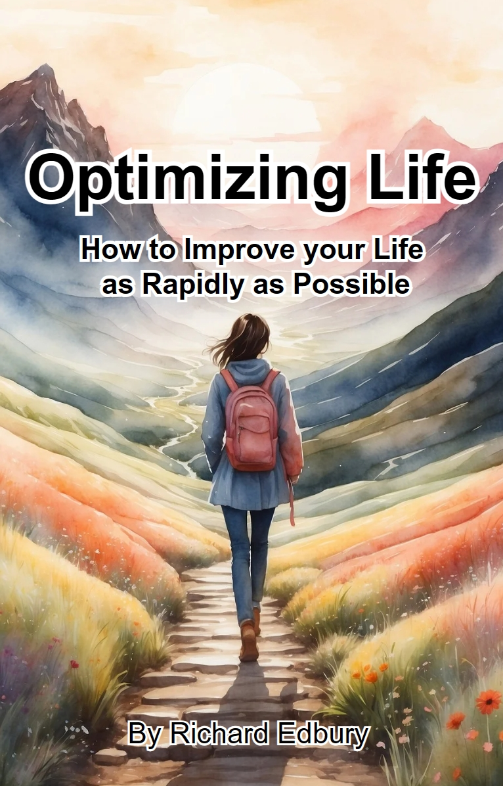

I have significant education experience. I’ve written an educational book, taught at both the university and business levels, designed curricula, run a company's global education program, created courses, and worked as an instructional/performance designer. I have a BSc in Software Engineering from the University of the West of England, Bristol, and a Postgraduate Certificate in Education (PGCE) from the University of Southampton. I’m truly passionate about education, which means I enjoy the work and stay up to date with education theory and practice.
I work with a whole host of methodologies, including Cathy Moore's Action Mapping approach, ADDIE, and a methodology I've personally developed, which I've named Importance Teaching.
Having run an Artificial Intelligence-based business, I consider myself at the cutting edge, but am equally happy avoiding its use if you're averse.
Founded and managed a business that trained undervalued Filipino employees in advanced AI software, enabling highly cost-effective digital services.
See examples of our work via our website:
https://optimizing-life.square.site/
Researched and wrote a book outlining the most practical and guaranteed ways to improve your life.
Click to read:

In this role, I managed CloudPay's Global training, CloudPay being a SaaS provider of payroll services, and ran a small team. The role involved training clients and internal staff, both in person and via web conferencing. It also involved instructional design and material creation, maintaining the learning management platform (FUSE), managing staff, project management, and other managerial responsibilities.
I was subcontracted from the Moment to work as an Instructional Designer for Babcock International, which in turn worked for the Royal Navy. The contract updated the Navy's entire engineering training program. My focus was on media design. The media was wide-ranging but primarily focused on simulations. I was cleared for an SC-level security clearance to get this job.
At NATS, I was hired primarily to fulfil a training contract with Lockheed Martin covering a large number of training courses. I developed a template system to rapidly build courses that matched their specific look and feel, speeding up the process to the point where I could work almost full-time on other internal training work. Much of this work involved developing educational games. Work was often collaborative in small teams. Completed packages were deployed on mobile devices and iPads, across a variety of work networks, and through NATS LMS, for which I was granted administrator rights to set up and manage courses. I was approved for a national security waiver to get this job.
I taught games, physics and mathematics alongside my more specialist areas of design and programming. The post involves teaching, lesson preparation and marking with some minor administrative responsibilities. As with the other teaching jobs, this involved a CRB check. E-learning was developed using Moodle.
I took a year-long break with the primary motivation of improving my programming and challenging myself. I had long wanted to design games professionally. With my background in and passion for card games, and given the relatively cheap development costs, it seemed natural to make one. The game uses simple artificial intelligence elements from the Tower Defence genre and a unique card-playing system that creates explosive combinations.
I took a month off to fulfil some of my travel ambitions. I was playing the card game Clash of Dragons and entered a competition they ran involving giving feedback on their game. I was selected to fly to California and spend a few days giving feedback on their game. They offered me a job, but unfortunately, the offer was made just days after the once-a-year work visa window closed, and the position fell through.
The game course was quite varied; I taught units in story, graphical narrative, Photoshop, Flash Programming (ActionScript 3), 3D graphics using Maya, games design, running a business, research, project management, the games industry, testing, games hardware, software, communication, research techniques, interface design, and animation. There were also lessons on general subjects such as CV writing, health, or current affairs, and on fundamental skills such as mathematics, writing, or presentation. The games course grew dramatically whilst I was there, with students achieving significantly higher grades and a high rate of university acceptance.
There were not enough hours of games lessons to make up a full-time job, so I made up the hours by teaching a range of other courses. These courses include journalism, which I ran for several months after a teacher left mid-term; the analytical aspects of TV and Film Studies; and a Creative Media Diploma, a highly varied course for younger students that encapsulated a wide range of skills from all media disciplines. Whilst doing this, I completed a PGCE at the University of Southampton.
Note: some of these projects are made using Flash or JavaScript and may not run on typical office computers. Similarly some of these games are designed for specific platforms — for example the busy airspace game is designed to be played with a smartboard in a classroom. It still works on a desktop but may not be optimal.
Learning Management Systems (LMS): Fuse, Moodle, SCORM, Canvas
E-learning Authoring Tools: Captivate, Canva, Articulate, Lectora
Programming Languages: JavaScript, HTML, CSS, PHP, C++, ActionScript 3, Visual Basic
Support Tools: Trello, Monday.com, Jira, ClickUp, Asana
All standard office software, AI packages, operating systems, and art packages